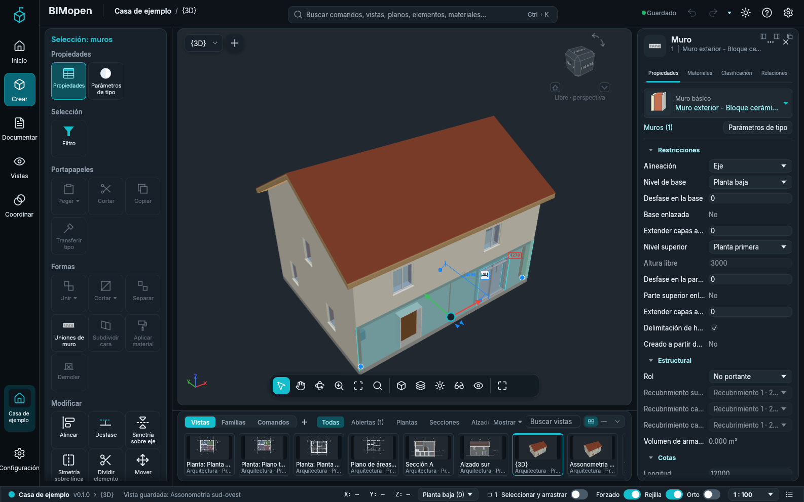
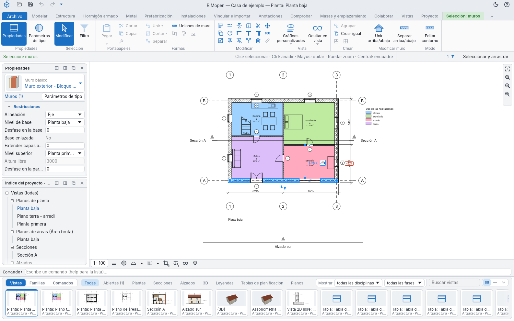
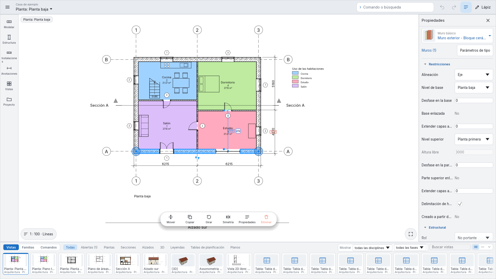
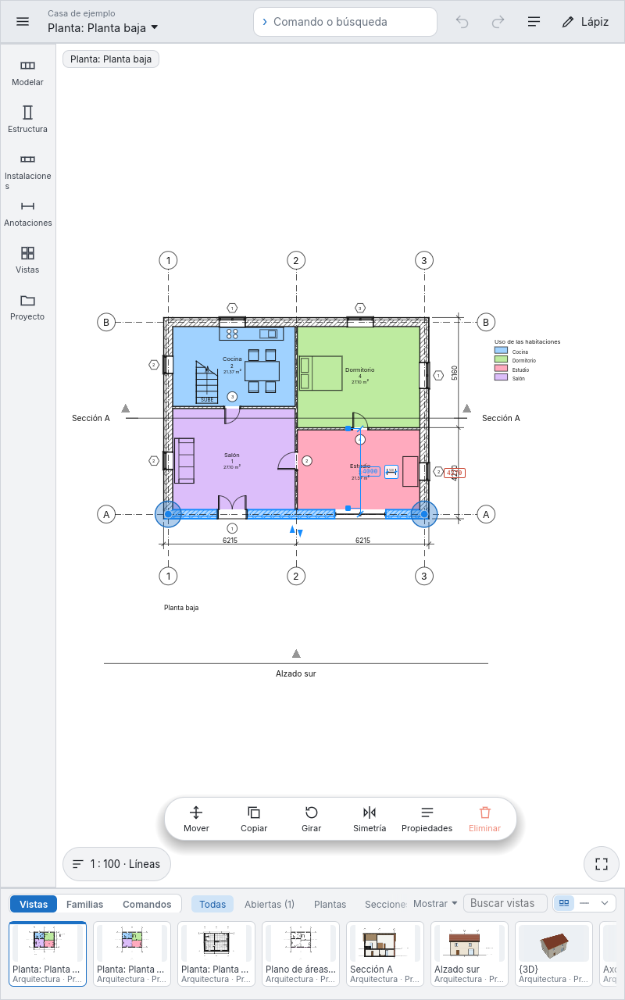
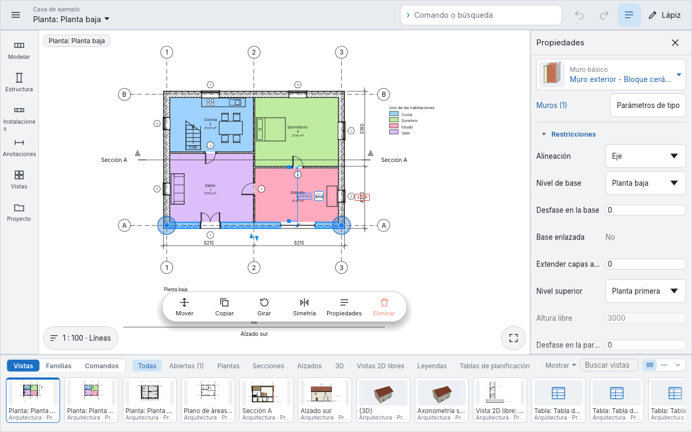
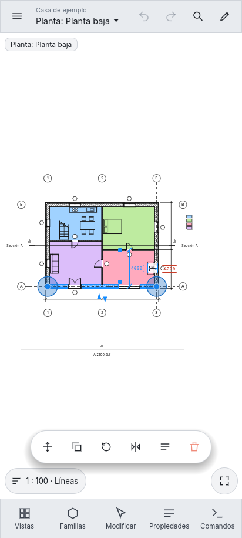
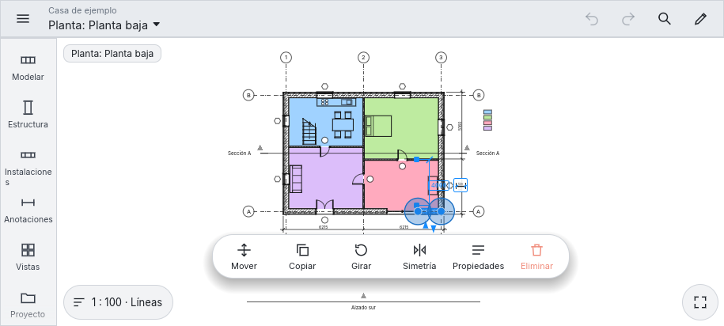

Estilos de interfaz
BIMopen tiene dos estilos de interfaz y un modo táctil. Todos ejecutan los mismos comandos, con los mismos nombres, atajos de teclado y resultados; solo cambian el aspecto y el lugar de las herramientas.
- El estilo BIMopen, descrito en La interfaz y mostrado en las imágenes de todo este manual: la barra lateral, el panel de herramientas, la búsqueda de comandos, el panel del elemento y la tira de vistas. BIMopen se inicia en este estilo.
- El estilo Clásica: la cinta de opciones con sus fichas, la barra de opciones, la paleta Propiedades y el Índice del proyecto en paneles.
- El modo táctil: la disposición para pantallas táctiles y lápices, en un monitor táctil, una tableta o un teléfono.
Elegir el estilo
- Haga clic en el engranaje del extremo derecho de la barra superior, o abra el menú de la aplicación y elija Opciones.
- En Interfaz de usuario, ponga Interfaz en Clásica o BIMopen. BIMopen se inicia en el estilo BIMopen.
La ventana cambia al instante. La elección queda guardada, en el ordenador y en el navegador, y la sesión siguiente se inicia en el mismo estilo. Tema (Claro u Oscuro) se aplica a los dos estilos.

En árabe toda la ventana se refleja, en todos los estilos: la barra lateral y el panel de herramientas, o las paletas, están a la derecha, el panel del elemento a la izquierda.
El estilo Clásica

| Parte | Dónde | Qué contiene |
|---|---|---|
| Barra de título | Arriba | La barra de herramientas de acceso rápido (Abrir…, Guardar, Deshacer, Rehacer y las herramientas que añada), el proyecto y la vista activa, el tema claro u oscuro y el menú ? |
| Cinta de opciones | Bajo la barra de título | Archivo, que abre el menú de la aplicación, luego las fichas (Modelar, Estructura, Hormigón armado, Metal, Prefabricación, Instalaciones, Vincular e importar, Anotaciones, Comprobar, Masas y emplazamiento, Colaborar, Vistas, Proyecto) con sus grupos de botones, y la ficha contextual mientras una herramienta trabaja o hay algo seleccionado |
| Barra de opciones | Bajo la cinta | Las opciones de la herramienta activa, como la franja de opciones del estilo BIMopen, y en su extremo derecho lo que espera la herramienta o el elemento bajo el cursor, el número de elementos seleccionados y Seleccionar y arrastrar; con el botón derecho, Anclar abajo |
| Propiedades e Índice del proyecto | A la izquierda | La pestaña Propiedades del panel del elemento y el Índice del proyecto de Vistas, como paneles que se acoplan a cualquiera de los lados o flotan |
| Área de dibujo | En el centro | Las vistas, cada una con su barra de controles de vista abajo (escala, detalle, recorte, aislar) y la barra de navegación en su borde derecho (Ajustar a la ventana, Ampliar, Reducir, Opciones de zoom) |
| Línea de comandos | Bajo el área de dibujo | El registro y el indicador; lo que se escribe en una vista va allí |
| Tira de vistas y familias | Abajo | La misma tira que en el estilo BIMopen |
Las entradas de la barra lateral del estilo BIMopen contienen las fichas de la cinta: Crear las fichas de Modelar a Masas y emplazamiento, Documentar los planos de Vistas y Anotaciones, Vistas el resto de Vistas y el Índice del proyecto, Coordinar Comprobar y Colaborar, Configuración Proyecto.
Todo el estilo Clásica
Cada función del estilo Clásica está en el estilo BIMopen, una sola vez:
- cada botón de la cinta es un mosaico del panel de herramientas, en la entrada de la barra lateral que contiene su ficha, y la ficha contextual Modificar es la tarjeta que aparece encima del panel mientras una herramienta trabaja o hay algo seleccionado;
- la marca de BIMopen arriba en la barra lateral abre el menú de la aplicación; la barra superior tiene deshacer, rehacer, las herramientas de acceso rápido y el menú ?;
- Vistas contiene todo el Índice del proyecto, con sus menús;
- una miniatura de la tira de vistas se puede arrastrar al plano abierto, o a la miniatura de un plano, y su menú contextual tiene las acciones del navegador y Abrir en la ventana activa;
- el menú del selector de vista organiza las ventanas de las vistas (Cambiar de vista, Mosaico, Cascada, Maximizar, Replicar, Cerrar ocultas); Ctrl+Tab pasa a la ventana anterior;
- el botón derecho sobre un mosaico ofrece Añadir a la barra de herramientas de acceso rápido: la herramienta aparece en la barra superior, funciona desde cualquier sección de la barra lateral y su botón derecho ofrece Eliminar de la barra de herramientas de acceso rápido;
- las sugerencias de teclas funcionan como en la cinta: pulse y suelte Alt (o pulse F10), luego la letra de una ficha abre la sección de la barra lateral que la contiene (su letra se muestra en la barra lateral) y las letras de una herramienta la inician.
Modo táctil
El Modo táctil dispone la interfaz para pantallas táctiles y lápices: teléfonos, tabletas y monitores táctiles. Ejecuta los mismos comandos que los dos estilos, con los mismos nombres; solo cambia la disposición, y cada control es lo bastante grande para un dedo.
Activarlo
Opciones ▸ Interfaz de usuario ▸ Modo táctil tiene tres valores:
| Valor | Efecto |
|---|---|
| Automático | Activo donde el dispositivo está pensado para el tacto: en un navegador con el dedo como puntero o una ventana de 900 píxeles de ancho como máximo, y en Android. En el escritorio queda apagado |
| Siempre | Siempre activo, también en el escritorio (un monitor táctil, una tableta PC) |
| Nunca | Nunca activo |
BIMopen recuerda la elección con las demás preferencias. Menú ▸ Salir del modo táctil devuelve la otra interfaz hasta el próximo inicio.
Teléfono, horizontal y tableta
La disposición sigue el espacio que tiene la ventana.
En un monitor táctil, o en cualquier ventana ancha (aquí 1920 × 1080): la barra lateral de la izquierda abre una paleta de herramientas para cada categoría (Modelar, Estructura, Instalaciones, Anotaciones, Vistas, Proyecto), las propiedades quedan a la derecha, la tira de vistas y familias abajo, y el campo Comando o búsqueda en la barra superior, junto a Deshacer, Rehacer y Lápiz.

En una tableta, en vertical (800 × 1280) o en horizontal (1280 × 800): la misma disposición que en un monitor. Donde la ventana es estrecha las propiedades se recogen, para dejar el espacio al dibujo: Propiedades en la barra superior las vuelve a mostrar.


En un teléfono en vertical (estrecho y alto): una barra superior compacta con el menú, el proyecto y la vista (un toque abre las vistas), Deshacer, Rehacer, Comando o búsqueda y Lápiz; el dibujo ocupa todo el ancho; cinco botones grandes abajo, Vistas, Familias, Herramientas (Modificar mientras hay algo seleccionado), Propiedades y Comandos, cada uno abre un panel desde abajo. Arrastre el asa del panel hacia arriba para alargarlo, hacia abajo para acortarlo o cerrarlo; un toque fuera lo cierra.

En un teléfono en horizontal (bajo y ancho): una barra lateral a la izquierda con las categorías Modelar, Estructura, Instalaciones, Anotaciones, Vistas y Proyecto, más las vistas y las propiedades; los paneles se abren a la derecha.

Las herramientas son mosaicos grandes con icono y nombre. Una herramienta que aún no existe está en gris, Todavía no disponible; una que no funciona en la vista 3D (Nivel, Rejilla, Plano de referencia, las anotaciones) está allí en gris, No disponible en la vista 3D. Un toque en un mosaico gris dice por qué.
Mientras una herramienta trabaja, una franja verde bajo la barra superior muestra sus opciones y
Listo, que la termina (o concluye un boceto). Mientras dibuja un muro, Longitud… abre la
línea de comandos: escriba la longitud del muro siguiente y, si hace falta, su ángulo, como 4.5
o 4.5 90.
Un toque selecciona, y los muros seleccionados muestran asas grandes en sus extremos. Sobre el dibujo una barra flotante ofrece Mover, Copiar, Girar, Simetría, Propiedades y Eliminar; una pulsación larga abre el menú contextual. Abajo a la izquierda el botón de la vista muestra la escala y el estilo gráfico y abre Escala, Detalle, Estilo gráfico, Sol y sombras, Recorte y Aislar temporalmente; abajo a la derecha Ajustar a la ventana.
Gestos y lápiz
| Gesto | Qué hace |
|---|---|
| toque | selecciona, o coloca el punto de la herramienta activa |
| arrastrar con un dedo | como con el ratón: una ventana de selección, un asa, un elemento |
| pulsación larga | el menú contextual |
| dos dedos | desplazan la vista; sepárelos o júntelos para ampliar; en la vista 3D gírelos para girar el modelo |
| doble toque | ajusta la vista a la ventana |
Lápiz en la barra superior es para un lápiz: el lápiz dibuja y selecciona, los dedos solo mueven la vista (un dedo desplaza, dos dedos desplazan, amplían y giran). Una paleta del lápiz al lado del dibujo tiene Seleccionar, Muro, Puerta, Ventana, Línea de detalle, Alineada, Texto y Más herramientas…. En un navegador es el navegador quien distingue el lápiz del dedo; en la aplicación de escritorio un toque que indica una presión se toma por un lápiz.